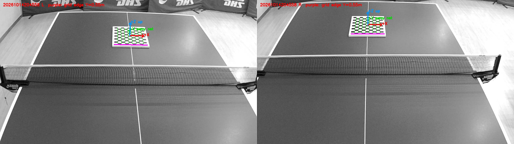
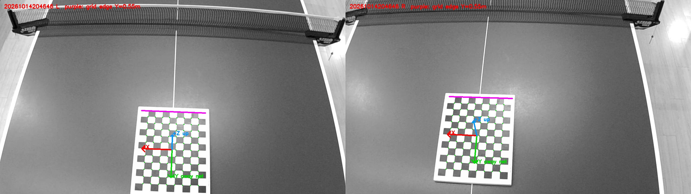
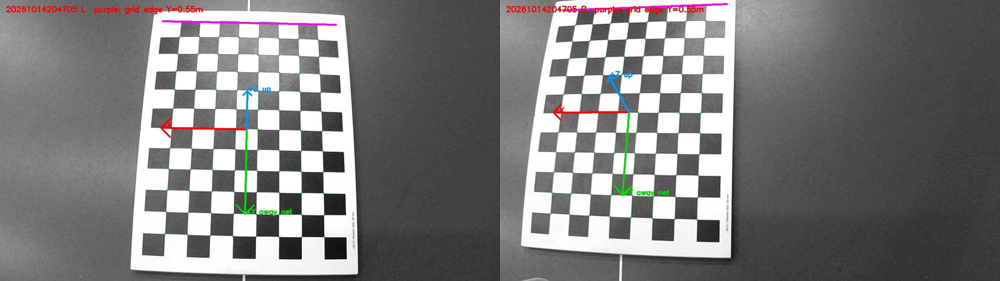
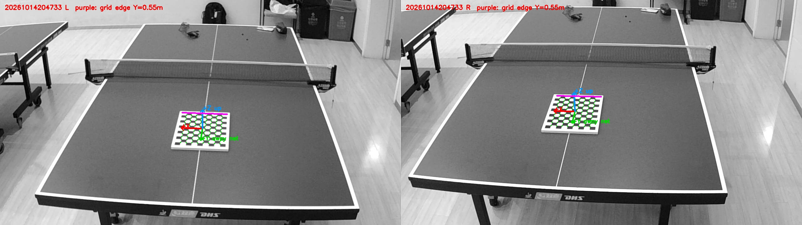
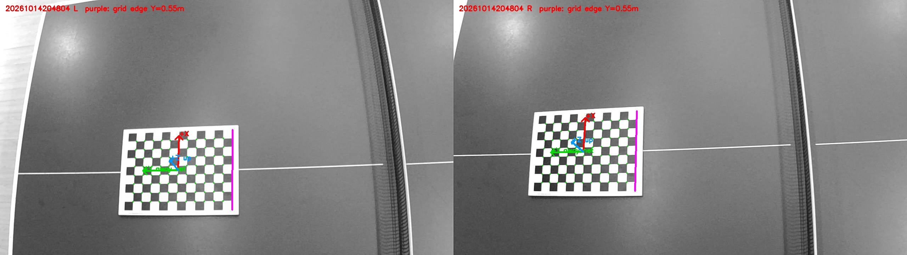

2026-10-15 · 5 张 PartV 均完成计算 · 单位：米
不同照片包含不同拍摄机位，每张保存一套映射。全部按“棋盘靠网方格边距网 55 cm”计算，仍需确认各张摆放一致及实际相机机位。小的单眼拟合误差不代表真实三维精度合格。
原点：球网与球台长轴中线在台面的交点。+Y 从网指向棋盘半台；+Z 向上；+X 横向并满足右手系。棋盘为 12×9 格、11×8 内角点，单格 3 cm。
紫线：黑白格子区靠网边，Y=0.55 m；最靠网内角点行 Y=0.58 m。箭头放在棋盘中心方便查看，箭头起点不是世界原点。
| 照片 | 左眼拟合 RMS px | 左姿态投右眼 RMS px | 三维残差 RMS mm | 台面 Z RMS mm | 垂直误差最大 px |
|---|---|---|---|---|---|
| 20261014204558.bmp | 0.105 | 2.697 | 43.40 | 16.54 | 2.721 |
| 20261014204646.bmp | 0.207 | 4.365 | 38.58 | 34.02 | 1.795 |
| 20261014204705.bmp | 0.270 | 3.267 | 7.93 | 7.09 | 1.506 |
| 20261014204733.bmp | 0.110 | 2.969 | 69.94 | 35.12 | 0.806 |
| 20261014204804.bmp | 0.106 | 1.719 | 20.06 | 18.81 | 0.406 |
以上使用参与姿态计算的棋盘点，只是内部一致性检查；尚未通过独立世界精度验收。板厚未知，把印刷面近似当作台面。

[[ 0.997890753 0.010955403 0.063984566 -0.140097891] [-0.046174136 -0.57302533 0.818235858 -1.398624425] [ 0.045628881 -0.819464429 -0.571310822 0.980581334] [ 0. 0. 0. 1. ]]

[[-9.993184805e-01 -3.689245770e-02 1.233311400e-03 -8.441716934e-03] [-3.161558328e-02 8.381802082e-01 -5.444762561e-01 1.385187918e+00] [ 1.905333004e-02 -5.441441768e-01 -8.387753486e-01 1.283017882e+00] [ 0.000000000e+00 0.000000000e+00 0.000000000e+00 1.000000000e+00]]

[[-0.999721067 -0.020373593 -0.011945951 -0.001227136] [-0.015605824 0.949506211 -0.313359878 1.001656416] [ 0.017727021 -0.313086046 -0.949559309 0.676688123] [ 0. 0. 0. 1. ]]

[[-9.973954716e-01 -3.652519223e-02 6.219472283e-02 -1.518072864e-01] [-7.212591761e-02 5.093081938e-01 -8.575564213e-01 2.763147557e+00] [-3.538688143e-04 -8.598087427e-01 -5.106160992e-01 1.201173029e+00] [ 0.000000000e+00 0.000000000e+00 0.000000000e+00 1.000000000e+00]]

[[ 0.002434436 -0.951516758 0.307587277 -0.408802809] [-0.994566998 0.029706954 0.09976965 0.40237122 ] [-0.104069975 -0.306159037 -0.946274846 1.482145 ] [ 0. 0. 0. 1. ]]
当前没有把任意一套 PartV 映射直接应用到视频。视频机位尚未和这些照片可靠对应，画面还有机位变化迹象。确认机位或提供该视频机位的已知台面控制点后，才能选定/重建对应映射。